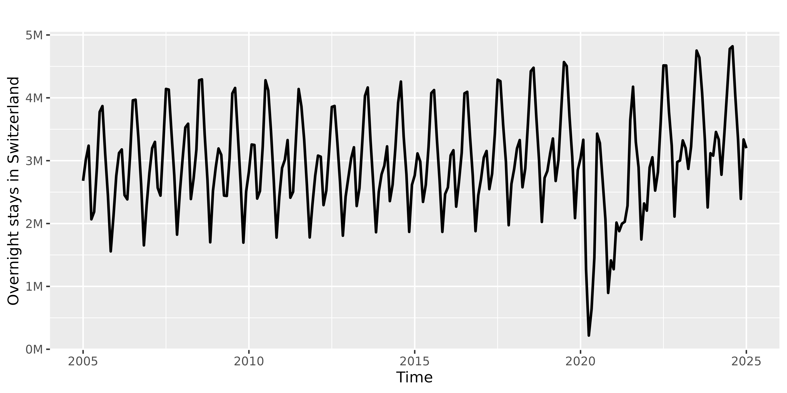
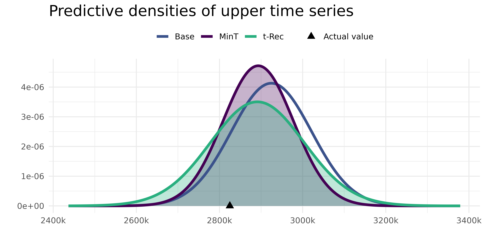

t-Rec: Reconciliation of Gaussian forecasts by modelling the uncertainty on the covariance matrix
Dario Azzimonti, Chiara Carrara, Lorenzo Zambon, Giorgio Corani
Source:vignettes/t_reconciliation.Rmd
t_reconciliation.RmdIntroduction
This vignette showcases the method t-Rec, a Bayesian approach to forecast reconciliation that explicitly accounts for uncertainty in the covariance matrix of the residuals.
t-Rec exploits the flexibility of Bayesian models to incorporate parameter uncertainty: it assumes an Inverse-Wishart prior on the covariance matrix. This choice allows the reconciliation to be derived in closed form, resulting in a reconciled predictive distribution that follows a multivariate Student’s t. See Carrara et al. (2025) for a detailed explanation.
Loading the data
We consider the monthly Swiss overnight tourist stays data divided by canton and aggregated over the whole country. This is a cross-sectional hierarchical structure, consisting of two levels: the national total and the division by canton, for a total of 27 time series (1 upper and 26 bottom).
The dataset is available in this package and can be loaded as
bayesRecon::swiss_tourism. This is a list that contains the
mts object with the time series (ts), the
aggregation matrix (agg_mat) and the number of upper
(n_upper) and bottom (n_bottom) time series.
The raw data is also publicly available on the official website of the
Swiss Confederation at this link.
The dataset spans the period from January 2005 to January 2025, comprising 241 monthly observations.
The time series exhibit strong seasonality. Figure 1 shows the top-level (aggregate) time series.
# save all time series
Y = swiss_tourism$ts
# plot the first (top) time series
autoplot(Y[,1], ylab = "Overnight stays in Switzerland",linewidth=0.9)+
scale_y_continuous(labels = function(x) paste0(formatC(x / 1e6, format = "g"), "M"))
Figure 1: Swiss tourism: monthly overnight stays in Switzerland.
We load the aggregation matrix and select the length of the training set. The length of the training set can be selected within the range [14, 240] observations: at least 14 observations are needed to initialise the prior from the residuals of the naive forecasts of these monthly series, and at most 240 so that one observation is left for the forecast horizon.
# Save aggregation matrix
A = swiss_tourism$agg_mat
# Number of bottom and upper time series
n_b = ncol(A)
n_u = nrow(A)
n = n_b + n_u
# Frequency is monthly:
print(frequency(Y))
#> [1] 12
# Select the length of the training set and the forecast horizon
L = 60
h = 1 # the code below assumes h = 1
# Select the training set and the actuals for the forecast horizon
train = window(Y, end = time(Y)[L])
actuals = window(Y, start= time(Y)[L + 1], end = time(Y)[L + h])Forecasts
The base forecasts are generated using the ets()
function from the forecast package, which fits individual
exponential smoothing models to each time series.
For each time series, we save the base forecast mean
(base_fc) and the residuals from the fitted model
(res), which are used to estimate the covariance matrix of
the forecast errors.
Reconciliation
We can now reconcile the forecasts with the function
reconc_t(), which implements the t-Rec method.
This function takes as input the aggregation matrix A,
the base forecast means base_fc_mean, the training data
y_train and the model residuals residuals and
returns the parameters of the reconciled forecasts, which are
distributed as a multivariate Student’s t. The flag
return_upper = TRUE makes the function return also the
parameters of the upper-level reconciled forecasts, while the flag
return_parameters = TRUE makes it return also the
parameters of the posterior distribution of the covariance matrix; they
will be used to compare the covariance estimates.
t_rec_results = reconc_t(A, base_fc_mean = base_fc,
y_train = train,
residuals = res,
return_parameters = TRUE,
return_upper = TRUE)For the selected data window, we save the base forecasts (Base) together with the covariance matrix of their residuals.
# Base forecasts
Base_mean = base_fc
Base_cov_mat = crossprod(res)/nrow(res) # covariance of the residualsWe further compute the reconciled forecasts with the standard
Gaussian reconciliation (MinT, Wickramasuriya et
al. (2019)). Note the flag return_upper = TRUE,
which makes the function return also the parameters of the upper-level
reconciled forecasts.
# Gaussian/MinT: compute reconciliation with bayesRecon
gauss_results = reconc_gaussian(A, base_fc, residuals = res, return_upper = TRUE)
# Reconciled mean for the whole hierarchy:
MinT_reconciled_mean = c(gauss_results$upper_rec_mean,
gauss_results$bottom_rec_mean)Comparison of results
We now compare the predictive densities for the 1-step ahead forecasts of the upper-level time series (Switzerland) obtained by the three methods above: the base forecasts (Base), Minimum Trace reconciliation (MinT), and t-Rec.

Figure 2: Predictive densities of the upper time series obtained with MinT (purple), t-Rec (green) and Base (blue). The black triangle indicates the actual value.
The base forecast and the MinT reconciled forecast are normally distributed, while the t-Rec reconciled forecast follows a Student’s t distribution. Both reconciliation methods improve the forecast: their means are closer to the actual value. However, the t-Rec method returns a wider density, which is more likely to contain the actual value. This is because t-Rec accounts for the uncertainty in the covariance matrix of the forecast errors, which leads to a more realistic representation of the forecast uncertainty.
Comparison of the covariance matrix estimates
The main strength of t-Rec is that it provides an estimate of the covariance which quantifies its own uncertainty. To illustrate this point, we compare the estimates of the covariance matrix of the base forecast errors used by t-Rec and by the standard Gaussian reconciliation method (MinT), both computed before the reconciliation step.
In t-Rec, the covariance matrix of the base forecast errors is
estimated in a Bayesian way: we put an Inverse-Wishart prior on the
covariance, we assume that the residuals of the base forecasts are
Gaussian distributed and we obtain a posterior distribution which is
again Inverse-Wishart with known parameters
and
.
The output of the function reconc_t() stores those
parameters in t_rec_results$posterior_nu and
t_rec_results$posterior_Psi. Note that those are not the
parameters of the reconciled forecasts, but the parameters of the
posterior distribution of the covariance matrix of the forecast errors.
In this section, we denote this estimate as ‘IW posterior’ to
distinguish it from the reconciled covariance.
Since the posterior is an Inverse-Wishart, we can write the marginal distribution of the variances in closed-form as an inverse Gamma distribution with the following parameters: where and denote the posterior Inverse-Wishart parameters and is the total number of series in the hierarchy.
In the second case (MinT), instead, a point estimate of the covariance matrix is obtained by applying the Schäfer Strimmer shrinkage estimator (Schäfer and Strimmer 2005) to the covariance of the residuals; this method is denoted here as ‘Schäfer Strimmer’.
For the Swiss tourism forecasts computed above, we focus on the
covariance between the upper-level series, denoted as CH, and the
bottom-level time series with the largest average number of overnight
stays, “Graubünden”, denoted as GR. Analogous considerations apply to
the other series: the code below is parametrised by the indices
i and j, so that other pairs of series can be
inspected by changing them.
# Full shrinkage covariance matrix with the Schäfer Strimmer shrinkage estimator
# The same matrix is computed internally by `reconc_gaussian()` before reconciliation
shrink_mat <- bayesRecon::schaferStrimmer_cov(res)$shrink_covWe show here the standard deviation instead of the variance because it is easier to interpret. The density of the standard deviation is obtained from the density of the variance (defined above) through the change-of-variable formula, implemented in the function below:
# Select which series to plot
i = 1 # CH
j = 19 # GR
# density of the inverse gamma
dinvgamma <- function(x, shape, rate) {
dgamma(1/x, shape = shape, rate = rate) / x^2
}
# density of the standard deviation (square root transform of variance)
d_std_dev <- function(x, shape,rate){
dinvgamma(x^2, shape = shape, rate = rate)*2*x
}
# compute the density of the standard deviation for CH;
# mean_ch is the posterior mean of the variance, used only to centre the grid
mean_ch <- t_rec_results$posterior_Psi[i, i]/(t_rec_results$posterior_nu - n - 1)
x_ch <- sqrt(seq(mean_ch*0.5, mean_ch*1.7, length.out = 1000))
shape_ch <- (t_rec_results$posterior_nu - n + 1) /2
rate_ch <- t_rec_results$posterior_Psi[i, i] / 2
dens_ch <- d_std_dev(x_ch, shape = shape_ch, rate = rate_ch)
# compute the density of the standard deviation for GR
mean_gr <- t_rec_results$posterior_Psi[j, j]/(t_rec_results$posterior_nu - n - 1)
x_gr <- sqrt(seq(mean_gr*0.5, mean_gr*1.7, length.out = 1000))
shape_gr <- (t_rec_results$posterior_nu - n + 1) /2
rate_gr <- t_rec_results$posterior_Psi[j, j] / 2
dens_gr <- d_std_dev(x_gr, shape = shape_gr, rate = rate_gr)Figure 3 shows the density of the posterior standard deviation of the forecasts for the upper time series (CH) and the bottom time series (GR). In each panel, the vertical dashed line marks the corresponding point estimate obtained with Schäfer Strimmer.

Figure 3: Density of the posterior standard deviation of the forecasts’ residuals, estimated with IW posterior. The dashed line is the Schäfer Strimmer estimate.
The posterior distribution for the covariance and for the correlation
values is not available in closed form, but it can be obtained via
sampling. Since the posterior distribution is an Inverse-Wishart
distribution, we can sample from it with the custom function
rinvwishart(), defined below, which fixes the seed for
reproducibility.
# generate k samples from an IW(Psi, nu) distribution
rinvwishart <- function(k, nu, Psi, seed=42) {
p <- nrow(Psi)
Sigma <- solve(Psi)
set.seed(seed)
all_W <- rWishart(k, df = nu, Sigma = Sigma)
W <- array(NA, dim = c(p, p, k))
for (i in 1:k) {
W[,,i] <- solve(all_W[,,i])
}
return(W)
}
IW_post_samples <- rinvwishart(k = 1000, nu = t_rec_results$posterior_nu,
Psi = t_rec_results$posterior_Psi)Figure 4 shows the posterior density of the correlation between CH and GR. The value estimated with Schäfer Strimmer, plotted as a vertical dashed line, lies in the lower tail of the IW posterior and differs from its mode, showing that the two estimates give a different picture of the dependence structure.

Figure 4: Density of the posterior correlation between CH and GR obtained with IW posterior. The dashed line is the Schäfer Strimmer estimate.
The two estimates therefore differ in both values and interpretation. IW posterior returns a density while Schäfer Strimmer is a point estimate. Moreover, the standard deviations estimated by IW posterior (both mean and mode) are larger than the Schäfer Strimmer point estimates (Figure 3). The correlation between CH and GR is also estimated differently: 0.62 with Schäfer Strimmer against a posterior mean of 0.73 with IW posterior (Figure 4). Accounting for this additional uncertainty is what makes the t-Rec predictive distribution wider than the MinT one in Figure 2.